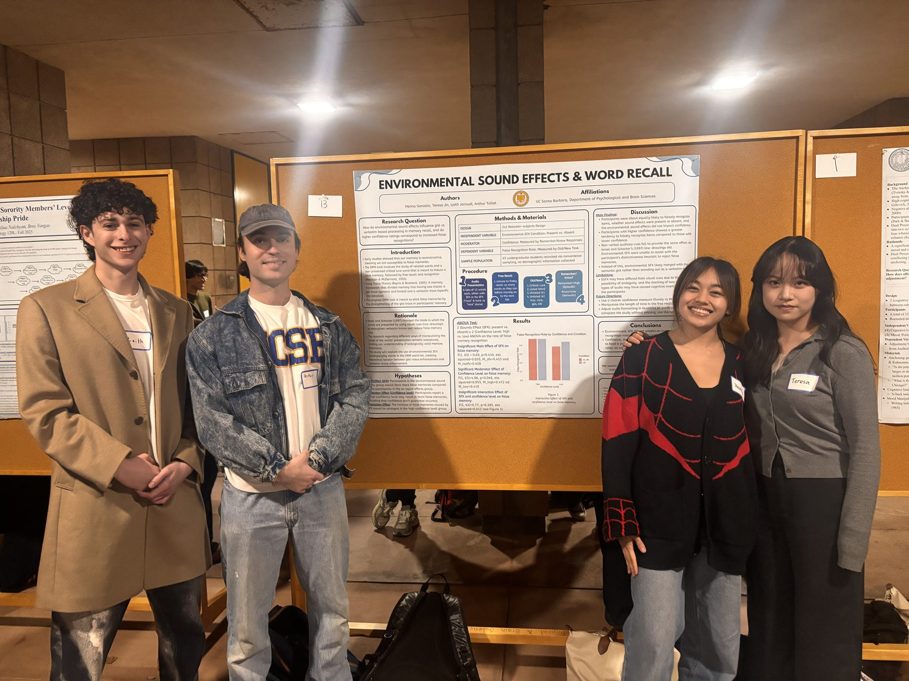

Sound Effects & False Memory
The Effect of Environmental Sound Effect on False Memory through the DRM Paradigm
Do environmental sound effects paired with spoken word lists change false memory?
- 67Participants
- 2×2Between-subjects design
- p = .048Effect of confidence
- r = .28Confidence and false memory
At a glance
- Role
- Co-investigator, team of four
- Course
- PSY 120L, UC Santa Barbara
- Timeline
- Fall 2025
- Methods
- Factorial ANOVA, Pearson correlation, DRM paradigm
- Tools
- Qualtrics, SPSS
- Recognition
- Best Poster, course colloquium

Overview
This study tested whether environmental sound effects paired with spoken word lists change false memory. It used the Deese-Roediger-McDermott (DRM) paradigm, in which people study lists of related words and later tend to remember a related word that was never presented.
Sound effects had no effect on false memory. Confidence did: false memories were reported with high confidence more often than with low confidence.
Background
Israel and Schacter (1997) found that presenting DRM words with line drawings reduced false recognition. Whether non-verbal sounds do the same had not been tested.
Fuzzy Trace Theory separates memory into a gist trace (general meaning) and a verbatim trace (specific detail). It allows two outcomes here. A matching sound could strengthen the gist of a list and raise false memory, or it could make each word more distinctive and lower it.
Research question
How do environmental sound effects influence gist-based versus verbatim-based processing in memory, and do higher confidence ratings correspond to more false recognitions?
Method
Participants
67 UC Santa Barbara undergraduates. Some took part for course credit through PSY 120L, and others volunteered through a link posted on social media.
Design
2×2 factorial design:
- Presentation mode: words only vs. words with sound effects.
- Confidence: high vs. low, from Remember/Know judgments.
DRM paradigm
Each list held words related to a critical lure that was never presented. For example, "sweet" and "chocolate" relate to the unpresented word "cake." Recalling or recognizing the lure counts as a false memory.
Sound manipulation
Words were read aloud in a recording. In the sound-effect condition each word came with a related environmental sound, for example the word "chip" with the sound of a crunch. The other condition heard the same recording without sound effects.
Procedure
Study phase
Participants opened the study in Qualtrics, were randomly assigned to a condition, and listened to each word list with or without sound effects.
Free recall
After each list they had one minute to write down every word they could remember.
Recognition test
After all lists, they judged whether each test word was old or new. Test words included studied words, critical lures, and unrelated words.
Remember/Know judgment
For each word judged old, they chose Remember (high confidence) or Know (low confidence).
Results
False recognition rate by confidence level and condition
- Audio only
- Audio + sound effects
High confidence: about 0.47 in both conditions. Low confidence: about 0.38 with audio only and about 0.44 with sound effects. Bar heights are approximate, read from Figure 1 of the paper. False recognition was higher with high confidence than with low confidence (p = .048).
Main effect of confidence
F(1, 65) = 4.06, p = .048False memory rates were higher for high-confidence "Remember" responses (M = 0.47) than for low-confidence "Know" responses (M = 0.41).
Main effect of sound effects
F(1, 65) = 0.69, p = .410Not significant. False memory rates were similar without sound effects (M = 0.43) and with them (M = 0.45).
Confidence and false memory
r = .28, p = .021A positive Pearson correlation. Participants who reported higher confidence had more false memories.
Interaction
F(1, 65) = 0.77, p = .385Not significant. Sound effects did not affect high-confidence and low-confidence false memories differently.
What it means
Environmental sound effects neither raised nor lowered false memory in the DRM task. In this study, confidence did not indicate accuracy.
Sound effects likely joined the gist
Unlike the line drawings in Israel and Schacter (1997), the sound effects did not reduce false memory. The likely reason is that each sound was processed as part of the meaning of its word, so it added to the gist trace and did not act as a distinctive verbatim tag.
False memories came with high confidence
False memories were more often given a Remember response than a Know response. This matches the phantom recollection reported in earlier DRM research (Roediger & McDermott, 1995; Brainerd & Reyna, 2002). Confidence also correlated positively with false memory (r = .28, p = .021).
Limitations
- Sound effects can be ambiguous. A participant who cannot identify a sound cannot use it as a cue.
- Each word and its sound effect played at the same time, which may have divided attention.
- The study ran online, so headphones and listening conditions were not controlled.
Future directions
- Norm the sound effects beforehand so that every participant can identify them.
- Test visual cues and non-verbal auditory cues in the same design for a direct comparison.
Open to research, analyst, and music-industry roles.